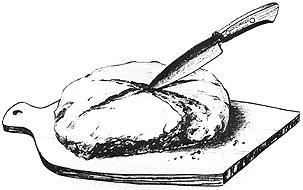

Clarence Massey's recipes for sourdough on the preceeding four pages are darn good ones . . . But there's more than one formula for sourings and the baked goods made from them. Here's two more variations on the theme. It's especially interesting that Cathy Johnson and Clarence Massey both knead their dough long and vigorously while Dudley Shaw cautions against unnecessary handling of the dough. Since both methods obviously produce the desired result, it seems that sourdough will work most any ole way you want to make it.
If you're tired of forgetting the yeast or tired of whole wheat bread's tendency to crumble (mine, a no-knead recipe, does anyway) or just tired of the same old taste . . . try some bread with real body. Try sourdough.
There's a number of recipes for sourdough starter and most of them scare off the beginner by calling for potatoes and other things more complicated and esoteric than you may have on hand. Forget them. Life wasn't meant to be that difficult. I've rummaged through the cookbooks and amalgamated the following formula that works (for me, at least) perfectly every time:
1 cup rye flour
1/2 cup lukewarm water (can be potato cooking water if you have it but we've found that it's not necessary.
1/2 cake or 1/2 tablespoon dry yeast, softened in another 1/2 cup warm water.
Stir these ingredients together and put the mixture in a clean crock with a lid if you have one . . . if not, a bowl with a plate on it, an enameled pan with a lid or even a nice big jar should do (just don't screw the lid down too tight or you may find yourself cleaning sourdough off half the Free World).
Without stirring or disturbing the starter, allow it to rise and fall until it gets as sour as you want it. And how sour should that be? We didn't know either the first time through, so we just ad-libbed and let ours get good and sour. The original recipe said, "allow to work two or three days" but our first batch, sitting next to the wood heater (on the cold floor` took about four. Once the starter is sour, put it in the refrigerator till you're ready to use it.
Now for the good part . . . the sourdough bread!
I like to experiment with my cooking and I've evolved a kind of a health-food, German-style, made-up bread recipe that you might want to try. Take one cup of starter and add:
1-1/2 quarts lukewarm water (the original recipe called for potato cooking water . . . but how would you ever get that much if you cooked your potatoes in as little water as possible to retain the vitamins? What I did was use 2/3 cup potato water and plain water for the rest. I think plain water all the way through would work just as well.)
1/2 cup blackstrap molasses
6 cups rye flour
Mix well, cook and let the sponge "work" about three hours in a warm place until it gets nice and sour. Stir, take out one cup of starter for your next batch (and, believe me, there'll be a next batch!) and store the starter in your refrigerator.
Stir two tablespoons salt (we use flake salt from the feed store but, since it contains no iodine, sea salt is probably better for you) and two tablespoons lard or other shortening into into the remaining sponge.
Add about four more cups flour (I use a mixture of rice polishings and corn, wheat, soy, rye and millet flour that we get from a health-food store in Kansas City) and stir well. Keep adding flour and stirring until you have a kneadable mixture. The original recipe called for ten cups but I've ended up using as much as 13, including what I put on the board to knead on (and in). The dough should be stiff.
Knead until the dough isn't sticky anymore. Shape it into three round loaves (or two, if you want big ones), place on oiled cookie sheets or in old pie tins (or even new ones . . . what the heck!) and put in a warm place to let rise approximately two to three hours or until dough has expanded in size by a third. I make cuts in the top of the sponge and judge the dough's expansion by how the cuts swell open.
If you cook on a wood stove-as I do-and your fire hasn't already been going all day, start stoking the blaze about an hour before the bread's due to be risen. At least that's how long it takes me to get mine hot enough. Contrary to the articles in MOTHER NO. 7, our little cookstove does not seem to get too hot. My fault, probably.
We have mainly soft maple and elm kindling and oak and walnut for the main fire . . . but to really stoke our stove on up there, I've found that corncobs are the thing to use. They're hot!
My stove's oven doesn't have a thermometer-not even the "warm-medium-hot" kind-so I put my little dimestore oven thermometer in there and it works fine.
Anyway, the temperature to shoot for is 350° F. If you have a gas or electric range, just preheat to that setting and forget it. If it's wood you're using, be prepared with lots of corncobs . . . you'll have to maintain that temperature for 1-1/4 to 1-1/2 hours.
I've found that it's easier to hold oven heat on my cookstove if I partially close the damper and reduce the draft once the stove is really roaring. It seems to keep the heat in and I don't have to jump up and down tending the fire nearly as much as I did last week when I made chocolate chip cookies. Then, I had the draft wide open and it just blew the fire right away. It took me almost an hour and a half to get the oven to register 225° F. and another hour and a half to bake three sheets of cookies. Live and learn.
Anyway, if you're cooking with wood, you'll certainly have worked up an appetite for that good old-time sourdough bread by the time it's done. We cut ours as soon as it's finished and put a lot of butter on it . . . and we figure we'll want some other kind of bread about 1989!
We'll probably be using the same starter then, too. Some sourdough starters have been kept alive for over 100 years and handed down through generations just like family silver. I can't think of a nicer thing to inherit.
Brad and Vena Angier, authors of a number of books about their homesteading experience in the bush country of British Columbia (see MOTHER'S Bookshelf) have often told how they were introduced to sourdough by seventy-year-old B.C. trapper Dudley Shaw.
Dudley preferred to launch his starter with four cups of flour, enough warm water to make a thick, creamy batter and an optional two tablespoons of sugar and two teaspoons of salt . . . although he allowed that a yeast cake dissolved in warm water would hasten the brew. He also mentioned that some oldtimers found it handy to add a tablespoon of vinegar to the original batch or to any aged sourings that needed reviving.
"Mix three-fourths of this initial starter with a tablespoon of melted fat and a cup of flour in which a teaspoon of baking soda has been well stirred," was Dudley's advice, "then add whatever additional flour is needed to make a smoothly kneading dough . . . and keep attacking. Don't gentle it. Too much pushing and pressing lets the gas escape that's needed to raise the stuff. Just bang the dough together in a hurry, cut off loaves to fit your pans and put them in a warm place to raise."
Let the dough plump out to double size, then bake it from forty minutes to one hour in an oven that is hottest during the first fifteen minutes and, according to Dudley, your bread will again be doubled in size and baked crisply done. If you want to test the loaves before cutting, jab `em with a straw. It should come out dry and "at least as clean as it was when inserted".
In the usual sourdough tradition, Dudley recommended that the Angiers recycle the cup of saved-back starter into a long series of baking adventures but he cautioned that they should always "cover the sourings loosely or they'll explode all over the place. Makes a ghastly mess. Remember they bubble copiously to better than double size, so use a container that's vast enough. When the mixture gets too rampageous, a touch of baking soda will gentle it."
Dudley added that too much soda could make the bread yellowish or even kill the sourdough altogether . . . and not enough would leave the bake: goods tasting sour. Experience is the best teacher.
The Angiers report that Dudley ended his lesson by presenting them with a batch of 14-year-old starter. When they gasped at the age of the sourings, he beamed, "They've just started nicely."
|
 |
|
|